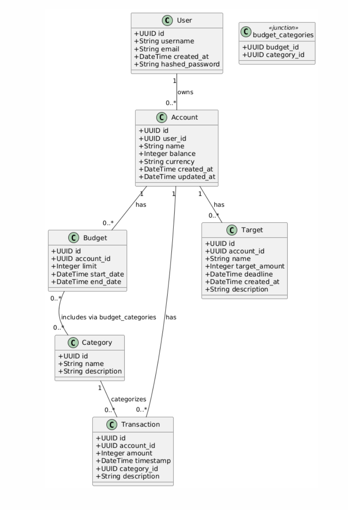
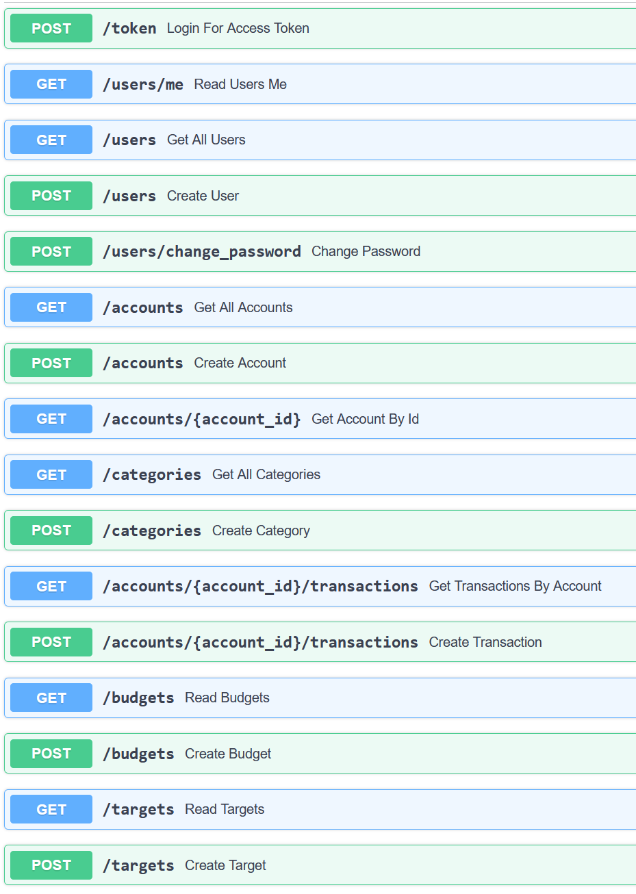
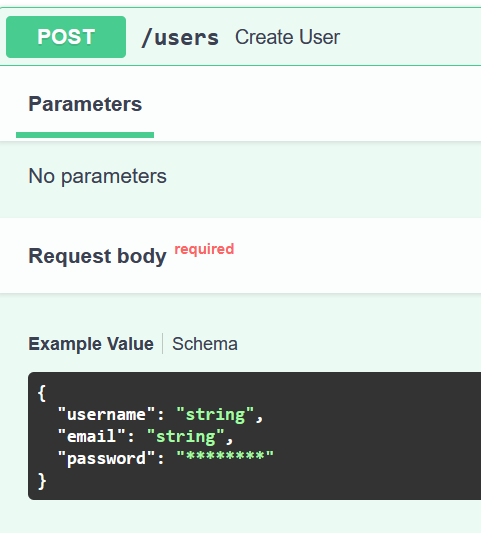

Цели
Научится реализовывать полноценное серверное приложение с помощью фреймворка FastAPI с применением дополнительных средств и библиотек.
Тема
Необходиом создать простой сервис для управления личными финансами. Сервис должен позволять пользователям вводить доходы и расходы, устанавливать бюджеты на различные категории, а также просматривать отчеты о своих финансах. Дополнительные функции могут включать в себя возможность получения уведомлений о превышении бюджета, анализа трат и установки целей на будущее.
Модель данных
 Для ведения учёта расходов и доходов используется транзакционная система с записью промежуточного итогу в баланс счёта. У каждой транзакции есть своя категория. Приход или расход определяется по тому + или - знак в поле amount. Чтобы ставить цели пользователь может завести отдельный счёт для накоплений. На этот счёт можно поставить цель и дедлайн. Для бюджетирования есть функционал создания бюджета на категории и счёт, для которого он будет применяться. У бюджета есть начальный и конечный срок.
API

Задание на 15 баллов
Эндпоинты авторизации и регистрации: - /token - POST - получение токена доступа - /users/me - GET - получение информации о текущем пользователе по токену и проверка его валидности - /users - GET - получение списка всех пользователей - /users - POST - регистрация
 Пароль хранится в базе данных в виде хеша argon2. Генерируется через passlib. Используется так же перец, который хранится в env файле. Соль хранится внутри строки получаемой из passlib в базе данных.
pepper = os.getenv('PEPPER')
pwd_context = CryptContext(schemes=["argon2"])
def hash_password(plain_password: str) -> str:
pwd_with_pepper = plain_password + pepper
return pwd_context.hash(pwd_with_pepper)
def verify_password(plain_password: str, hashed: str) -> bool:
pwd_with_pepper = plain_password + pepper
return pwd_context.verify(pwd_with_pepper, hashed)
Генерирую JWT через jose и отдаю его в token эндпоинте
def create_access_token(
data: dict,
expires_delta: Optional[timedelta] = None
) -> str:
to_encode = data.copy()
expire = datetime.utcnow() + (expires_delta or timedelta(minutes=LIFETIME_IN_MINUTES))
to_encode.update({"exp": expire})
return jwt.encode(to_encode, SECRET_KEY, algorithm=ALGORITHM)
Ручная валидация и парснг JWT. Разбиваю на куски, проверяю подпись, декодирую тело и возвращаю пользователя из бд:
def get_current_user(
token: str = Depends(oauth2_scheme),
db: Session = Depends(get_session),
) -> User:
header_b64, payload_b64, sig_b64 = token.split(".")
payload_json = _b64url_decode(payload_b64).decode("utf-8")
signing_input = f"{header_b64}.{payload_b64}".encode("ascii")
expected_sig = hmac.new(
key=SECRET_KEY.encode("utf-8"),
msg=signing_input,
digestmod=hashlib.sha256
).digest()
actual_sig = _b64url_decode(sig_b64)
print(expected_sig)
print(actual_sig)
if not hmac.compare_digest(expected_sig, actual_sig):
raise HTTPException(
status_code=status.HTTP_401_UNAUTHORIZED,
detail="Invalid token signature",
headers={"WWW-Authenticate": "Bearer"},
)
payload = json.loads(payload_json)
user_id = payload.get("sub")
user = db.get(User, user_id)
if not user:
raise HTTPException(
status_code=status.HTTP_401_UNAUTHORIZED,
detail="User not found",
headers={"WWW-Authenticate": "Bearer"},
)
return user